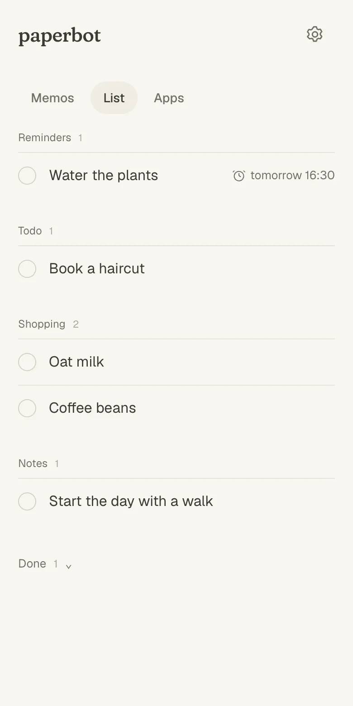

Hold the button and talk
Let go when you’re done. Paperbot turns it into a todo, a reminder, an answer or an app.

“Remind me to water the plants tomorrow afternoon”
It lands in one quiet list
Check it when you want, on your phone or laptop. Tick off todos, see what’s due and read the answers.

Or ask for an app
Say “build me an app that…” and Paperbot makes it while you get on with your day. A real app with its own database, and a link you can share with others.
PlantsNext watering
- MonsteraEvery 7 daysToday
- BasilEvery 2 daysToday
- PothosEvery 5 daysFri